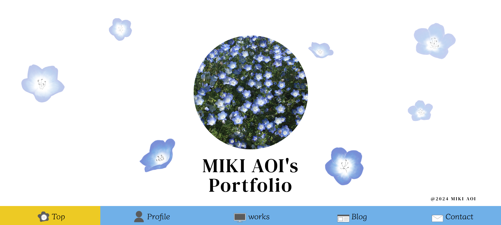
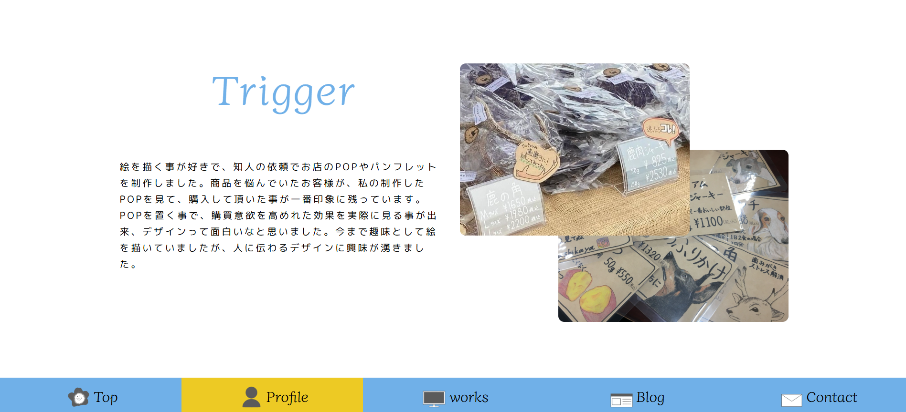
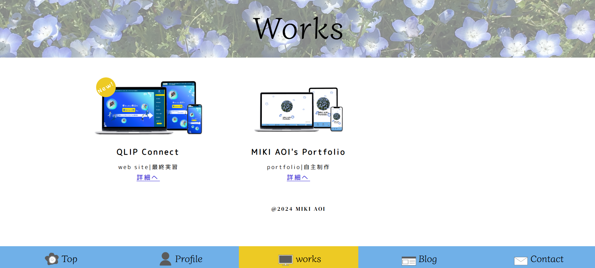
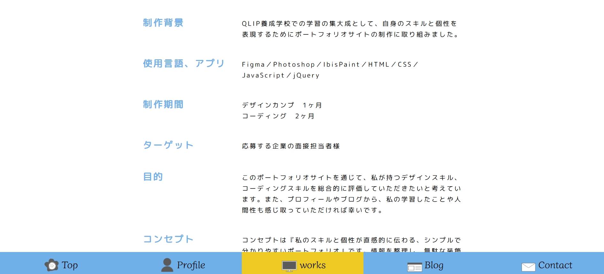
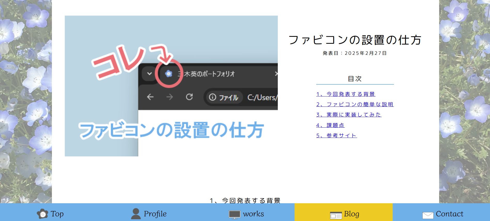
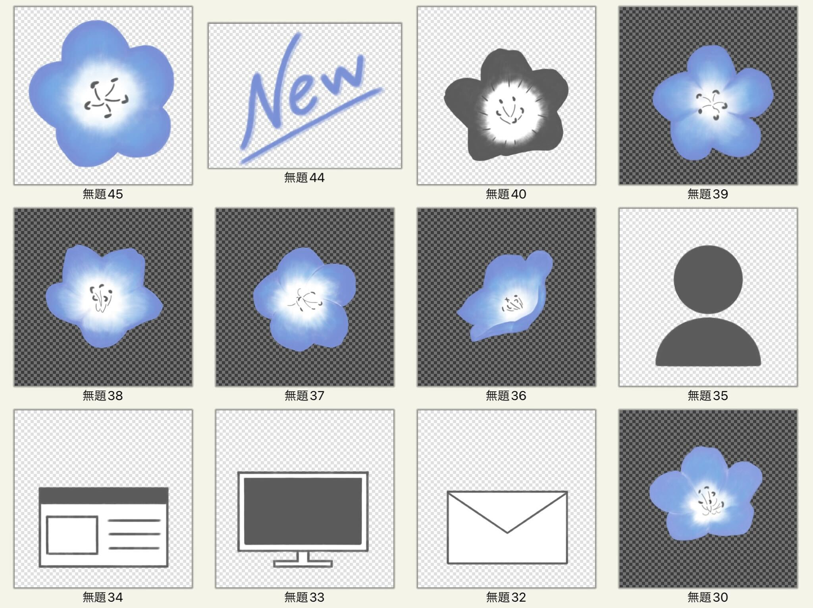

MIKI AOI's Portfolio
URL:https://ao20241120k.github.io/mikiaoi-portfolio/- 制作背景
- QLIP養成学校での学習の集大成として、自身のスキルと個性を表現するためにポートフォリオサイトの制作に取り組みました。
- 使用言語、アプリ
- Figma／Photoshop／IbisPaint／HTML／CSS／JavaScript／jQuery
- 制作期間
- デザインカンプ 1ヶ月
コーディング 2ヶ月 - ターゲット
- 応募する企業の面接担当者様
- 目的
- このポートフォリオサイトを通じて、私が持つデザインスキル、コーディングスキルを総合的に評価していただきたいと考えています。また、プロフィールやブログから、私の学習したことや人間性も感じ取っていただければ幸いです。
- コンセプト
- コンセプトは『私のスキルと個性が直感的に伝わる、シンプルで分かりやすいポートフォリオ』です。情報を整理し、無駄な装飾を排することで、採用担当者様が短時間で私の強みを把握できるよう工夫しました。また、親しみやすさを感じていただけるよう、手描きのイラストや柔らかな配色を取り入れています。
- サイト構成
- スマートフォンユーザーの閲覧体験を重視し、モバイルファーストで設計・実装しました。ナビゲーションはアプリのように画面下部に固定し、どのページからでも主要コンテンツへアクセスしやすいよう配慮しました。トップページはキービジュアルで世界観を印象づけ、各制作物やブログ記事は一覧ページから詳細ページへスムーズに遷移できるよう、情報の階層を整理しました。
- デザイン
- 『シンプルで分かりやすい』というコンセプトに基づき、情報を詰め込みすぎず、余白を効果的に使ったレイアウトを心がけました。フォント選定や文字サイズにも配慮し、可読性を高めています。また、各セクションのタイトルやボタンのデザインを統一することで、サイト全体の一貫性を保ちました。
- 配色
- 好きな青色で作りたいと思い、ネモフィラの花の色に白色と灰色を加えて、メリハリがありつつも優しい印象にしてみました。アクセントには黄色を使用し、視認性を高めています。
#ffffff
#70b0e8
#dedede
#EDCA24
Point
フッターの設定
モバイル環境での操作性を最優先に考え、フッターナビゲーションを設計しました。視認性の高いオリジナルアイコンとテキストを組み合わせることで、目的のページを直感的に見つけやすくしています。また、タップ領域を十分に確保し、現在地を示すためにアクセントカラーの黄色を背景に設けることで、ストレスのないナビゲーション体験を目指しました。
イラストを描いてみた
絵を描く事が趣味であり、このポートフォリオではデジタルでのイラスト制作にも挑戦してみました。IbisPaintを使用し、キービジュアルのネモフィラの花だけでなく、フッターのアイコンやファビコンも描きました。
見やすさを意識したレイアウト
サイト全体を通して、情報が整理され、ユーザーが必要な情報へ迷わず辿り着ける『見やすいレイアウト』を追求しました。特に、各制作実績ページ間や、ブログ記事への導線を明確にすることで、サイト内をスムーズに回遊できるよう工夫しています。これにより、私の作品や考えをストレスなくご覧いただけることを目指しました。
サイト設計
下記のボタンから、Figmaでデザインカンプやサイト設計等を確認できます。
FigmaへGo！